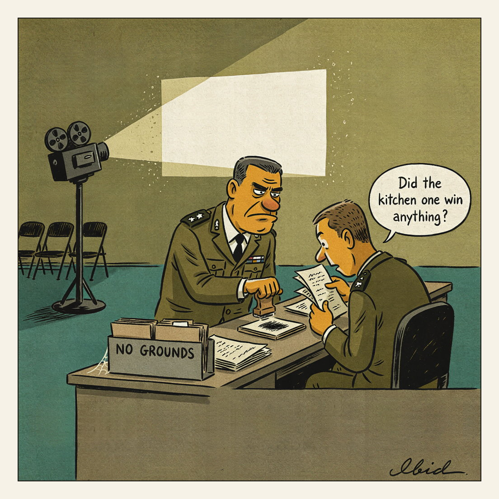

Two and a half years in development.
Awards Season

Israel's military confirmed for the first time that its troops fired on the car carrying five-year-old Hind Rajab, killed with six relatives in Gaza City in January 2024. A Military Police criminal investigation was opened roughly two and a half years later, after the army initially said no troops were in the area; a second probe covers the March 2025 killing of 15 Palestinians in Rafah. In three other cases — seven World Central Kitchen staff and four MSF employees — the IDF found no grounds for criminal investigation.